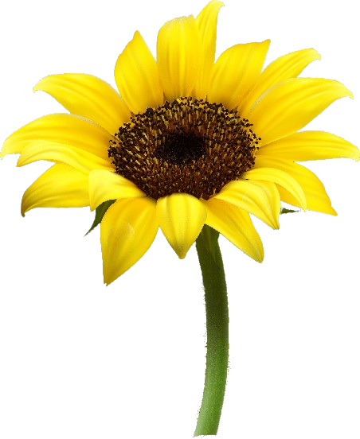

Hai... Apa kabarmu hari ini?
Teruntuk Tuan dengan sejuta mimpi...
Hai.. Apa kabarmu hari ini?
Apakah kamu masih meminum segelas besar teh hangat sebelum bergegas ke kantor? Menyisir rambutmu kesebelah kanan, menggunakan jam tangan sambil berjalan? Lalu memakai sepatumu dengan buru-buru? Apakah makanan kesukaanmu masih sama? Apakah tempat yang kita kunjungi masih yang itu-itu saja? Ah, Ntahlah.. aku tidak tahu harus memulai dari mana. Kamu tahu, kan, aku tidak bisa basa basi? Menceritakanmu seperti membawaku ke mesin waktu. Setiap aku mendengar namanu, ada rasa yang aku tahan, hangat… lalu tiba-tiba berubah sesak. Hari ini.. tepat hari ini sebenarnya adalah hari yang aku tunggu-tunggu, hari dimana aku akan menemuimu. Susah payah aku meminta acc cuti di 3 hari terakhir di bulan ini, yang harus diselingi dengan pembicaraan panjang dengan PIC, supervisor dan AssMen.
Terkesan konyol, semua aku lakukan agar aku bisa pulang (padamu)...
Memberi kejutan kecil yang manis, melipat jarak,
membiarkan semua rindu terbalas saat bertemu pelukan Tuannya...
Semua usahaku lakukan, sepertimu yang bersusah payah menyenangkanku satu bulan yang lalu,
mengambil libur yang hanya sebentar untuk sekedar bertemu...
Seharusnya, hari ini...
Akulah yang kamu lihat saat kamu bangun tidur...
Seharusnya aku yang merapalkan segala doa di dekatmu sambil membawa birthday cake...
Seharusnya teh manis buatanku yang kau sesap pertama kali di tahun ke-27 mu...
Seharusnya aku yang menjadi alasanmu bertambah bahagia di hari ini...
Seharusnya hari ini menjadi hari milikmu...
Seharusnya...
Tapi seharusnya, aku tidak boleh terlalu berharap.
Seharusnya aku tidak terlalu terlena.
Seharusnya aku ingat bahawa Tuhan masih punya andil dalam setiap rencana.
Karena, menaruh harap besar padamu seperti memeluk bom waktu.
Aku harus siap kapanpun ia meledak.
Niatku memberi kejutan gagal.
seperti mimpi...
Semua berbalik.
Aku yang terkejut...
Pikiranku selalu dipenuhi kenangan saat pertama kita bertemu, cara kita saling mengagumi dan mengangungkan. Kutarik nafas dalam-dalam, mengajak pikiranku menelusuri tiap inci bagian terindah bersamamu. Memory seperti berjalan sendiri tanpa diminta, seperti flash back dimana awal aku bertemu. Saat kamu mengatakan cinta, susah senang kita lewati bersama, dan memimpikan atap rumah yang sama. Aku mengenanalmu dari teman dekatku. Masih segar di ingatan, saat kamu pertama datang ke rumah, niatmu hanya menemani temanku. Kamu hanya diam, sambil sesekali menimpali percakapanku dengan temanku (yang kebetulan adalah saudaramu). Pertemuan tanpa kesan, tapi berbekas. Sempat satu kali kamu mengantarku pulang, melihatmu sholat hati ini terasa hangat. Lalu, semua berjalan biasa, saling menyapa dan berlalu begitu saja. Waktu berlalu, sampai kita betemu di dalam keadaan yang sama, saat dimana kita di kecewakan oleh masing-masing pasangan yang kita jaga. Kita benar berada di posisi yang sama.
Satu malam, kita (bertiga) memutuskan untuk keluar menikmati malam untuk sekedar duduk bersama, berbincang-bincang ringan, tertawa tak tentu arah. Tapi entah ini berbeda dengan pertemuan sebelumnya. Degup ini semakin terasa. Seusai menikmati minum hangat dan beberapa cemilan, kau dan aku pulang. Tapi, lagi-lagi semua berlalu begitu saja. Aku dengan kesibukanku, kau dengan kesibukanmu. Hari berlalu tanpa memikirkanmu, sampai di satu sore, saat aku ingin keluar kost, ada satu kendaraan hitam membunyikan klakson didepan kost berpagar hijau. Aku diam. Lebih tepatnya... tidak memperhatikan. Selang berapa jam kemudian kamu datang, dengan kaos pendek dan jeans panjang kamu tersenyum. Manis. Aku tetap diam, menerka... siapa? Dan ternyata... kamu. (Dengan rasa aneh) aku mempersilahkanmu masuk, berbincang dan memutuskan untuk keluar bersama. Waktu semakin berlalu. Kita semakin dekat. Tiba dimana saat kamu mengajakku keluar bersama rombongan temanmu, dan mengenalkanku dengan sebutan… ini “Nyonya besarku”.. ada pelangi di hati, aku… bahagia. Semua indah...
Aku semakin erat memeluk bayangmu. Semua kenangan seperti film yang berputar tanpa jeda. Aku masih ingat saat pertama kali kamu ajak pulang ke rumah, kamu perkenalkan aku di depan keluargamu sebagai ‘teman dekatmu’. Dengan canggung aku menginjakkan kaki ku di tempatmu. Aku ragu... ternyata mereka menyambutku dengan hangat… aku benar-benar merasa nyaman. Aku temukan keluarga baru. Aku sadar, aku beruntung. Entah.. masih saja lekat di ingatan, saat kamu menjagaku ketika aku 8 hari dirawat di rumah sakit. Dari kantor barumu, kamu memutuskan untuk tidak pulang ke rumah, padahal aku tahu kamu pasti lelah. Kamu melakukannya hanya untuk memastikanku baik-baik saja. Kamu mencuri-curi waktu untuk makan dan mengerjakan tugas kantor di sampingku. Kamu berusaha tersenyum saat mengganti kompres di keningku (padahal aku tahu kamu sangat lelah). Kamu memijatku saat aku mengeluh badanku terasa sakit (karna pasien dengan DB dan Thypoid pasti merasakan seluruh persendiannya sakit). Kamu tidak keberatan bangun disela istirahatmu saat aku merintih karna demam tinggi di malam hari. Kamu selalu mengelus tanganku setelah injeksi masuk dalam venaku. Kamu ikhlas menyuapiku, menyisir rambutku, mengelap wajahku, dan menungguku menghabiskan obat yang kamu cari agar trombositku naik. (Dulu). Kita sangat takut akan kata sendirian, kita sama-sama saling takut kehilangan.
Ingatkah saat kamu rela berjalan dari Sebelas Maret sampai Solo Baru hanya untuk memperbaiki hubungan kita? Dari awal saja, aku sudah jatuh hati. Tak ingatkah kamu, setiap sore kamu selalu mengirimkan senja untukku? Kita pernah rela hujan-hujanan dan menunggu 6 jam untuk nonton Payung Teduh. Kamu pernah membohongiku pamit keluar sebentar dan pulang dengan novel kesayangan, Milana Penganggum Senja. Kamu... Tak terasa, air mataku terjatuh... Aku juga ingat, saat ulang tahun ke 21 ku. Tepat jam 00.00 kamu datang membaca kue tart, membawa satu tas kecil kado, hadiah yang sangat aku suka. Teringat juga saat ke tahun ke 22 ku, kamu memberiku kejutan yang sangat manis, seperti biasa... kamu sosok yang sempurna.
Kamu lelaki(ku)… kamu jawaban segala doaku.. kamu penguatku.. Kamu, Kamu, Kamu.. Jika ada kata yang lebih dari bahagia karna cinta, itu yang aku rasa. Betapa sombongnya aku jika meminta lebih, karna kamu lebih dari cukup Sudah banyak hal yang sudah kita lalui bersama. Kamu, laki-laki(ku) yang baik. Pekerja keras, pemimpi besar dengan usaha yang kuat. Kita pernah melalui masa dimana aku dan kamu bersesak-sesakan mendatangi job fair, kita masih bisa tertawa bahagia makan di pinggir jalan lalu ban motor kita bocor, kita pernah menunda keinginan seraya menyisihkan sisa-sisa tabungan hanya untuk menonton film terbaru. Kita terlalu banyak berbicara mimpi, bahkan terlalu banyak di banding dengan bintang disana. Iya.. Kamu tahu bagaimana memanjakanku, aku selalu berusaha selalu menghargaimu. Kamu adalah aku, kamu terlalu indah untuk aku kecewakan. Kamu tau kan, aku selalu berusaha menjadi yang terbaik untukmu? Taukah kamu, Tuan.. kita sudah banyak membuat iri banyak pasang mata? Iya.. kata mereka kita banyak kemiripan. Mereka bilang.. kamu terlalu sempurna, sosok tenang untuk aku yang suka meledak-ledak. Kamu menyeimbangkanku. Kata mereka, kamu tau bagaimana membahagiakan perempuan, dan kata mereka, aku bisa menghargaimu. Aku banyak berubah untukmu, banyak segi positif berubah di hidupku, bahkan orangtuaku dengan senang hati ‘menitipkanku’ padamu. Sampai pada akhirnya ada keputusan yang mengharuskanku untuk ke kota kejam ini. Membina hubungan jarak jauh. Berteman rindu, menjaga percaya, mengikat komitmen dan memupuk asa. Membiarkan Semesta mengambil alih rencana. Semua baik-baik saja. Masih teringat jelas. Akhir tahun lalu, dengan kemeja biru (kesukaanmu), kamu datang ke kotaku. Masih pekat di ingatan saat aku menjemputmu, perasaanku tak menentu. Sepeti bocah yang malu-malu saat di beri permen dan mainan baru, like butterflies flies in my stomach... seperti ah.. aku tidak tahu. Haru, bahagia, rindu, tidak percaya, semua bercampur menjadi satu. Sejenak aku diam, kikuk. Aku bingung harus berbuat apa, yang aku tau.. aku hanya ingin berteriak. Membiarkan semua orang tau kalau aku sedang bahagia.. dengan senyum yang sangat lebar, ingin sekali aku berlari memelukmu. Hati ini menginginkan kamu, lebih dari apapun. Kita masih sempat berbicara tentang langkah serius yang kita impikan bersama, kita masih bisa menyantap makanan kesukaan, kamu masih mengusap rambutku seperti biasanya. Kamu memanjakanmu, kita sempat tersesat saat mencari store uniqlo.. berbagi tawa bersama, pelukan yang hangat. Saat kamu pulangpun, aku masih menangisimu, sesak karna hanya bertemu denganmu hanya hitungan jam. Kamu.. masih mengharapkanku untuk segera pulang, berbagi waktu bersama seperti dulu. Semua (masih) baik-baik saja. Tidak pernah terbersit, jika itu babak akhir dari ‘kita’. Seperti biasa, setelah merebahkan badanku sesuai pulang kerja, aku dapati kamu tak mengabariku. Tidak seperti biasanya kamu selalu memberi kabar. Selalu. Aku tegaskan sekali lagi, SE-LA-LU.
Firasatku mengatakan, ada sesuatu. Seperti magic, dan….VIOLA!!! dalam hitungan hari kamu berubah. Kamu begitu kasar. Kamu seperti monster. Perasaaanku tak menentu. Ingin sekali aku pulang untuk melepas peluhmu saat seperti ini. Tapi kamu melarangku. Kamu begitu ‘ngotot’ melarangku. Ada apa sebenarnya? Perasaanku benar-benar kacau. Kamu semakin menjadi-jadi. Kamu sudah biasa tanpaku, apa aku tak penting lagi? Entahlah.. malam itu aku masih gelisah. Waktu sudah menunjukkan pukul 03.45 pagi. Aku masih terjaga. Masih samar, menerka apa yang sedang terjadi (denganmu) disana. Aku mencoba tenang. Bersimpuh, berdoa mengharap semua baik-baik saja.
Keesokan harinya, semua seperti mimpi... Aku dipaksa bangun. Sesak. Seakan tidak ada oksigen yang masuk dalam paru-paru, saat mengetahui semua pondasi yang kita bangun kamu rusak-sendirian. Seperti de javu. Aku tak bisa apa-apa.. Hitam, aku sudah tak ingat lagi. Aku terbangun di ruangan yang tak aku kenal, tapi tak familiar. Orang berbaju putih, bau obat, selang oksigen dan cairan infus. Saat aku sadarkan diri, yang tersisa hanya serpihan. Semuanya sudah berakhir. 3 tahun yang entah aku tak tahu, entanh wasting time atau apa. Semua cerita berakhir dengan satu kata. Semua kenangan seperti tak berarti dengan satu kata. Semua rasa sudah terabaikan dengan satu kata. Hatiku tersentak, egomu mengakhiri semua rasa.. Aku belum mendapat kejelasan atas semua ini. Banyak pertanyaan yang harus aku ajukan. Banyak jawab yang seharusnya aku dengarkan. Aku tidak pernah menyangka, kamu begitu sekejam ini. Aku tidak mengenalimu, lelaki(ku).. Aku bergeming, kecewa, kesal, amarah, semua berkecamuk dalam dada. Aku tidak mampu berkata-kata. Semua hilang, kosong. Tapi aku tak selemah apa yang kamu pikir. Hubungan yang salah seharusnya diperbaiki, bukan ditinggalkan. Aku berjuang untuk apa yang pantas aku perjuangkan. Bukan untuk meminta tepuk tangan, atau membiarkan cemooh datang. Sungguh, aku tidak menginginkan semua. Aku hanya ingin berjuang. Aku hanya menginginkan pertemuan, pembicaraan 2 pasang mata, penyelesaian masalah secara dewasa. Dan kekuatanku untuk memperbaiki membawaku pulang, dengan segala niat “lillah” aku kembali. Dengan bekas suntikan di tangan kiri, aku terbang ke arahmu. Entah apa yang aku pikir sehingga bisa senekat itu. Di ruang tunggu, aku hanya memandangi orang lalu lalang, bagaimana aku melihat banyak orang bahagia saat ingin pulang. Sementara aku? Ku tarik nafas sangat dalam. Ragu, mengabarimu atau membiarkanmu tau saat aku sudah ada di dekatmu. Aku berusaha menenangkan hatiku, menyelaraskan logika dan perasaan. Ku ambil ipod, sayup aku dengar suara Chris Martin, di sepanjang perjalanan aku hanya diam. Menerawang. .
48 jam di putaran yang sama denganmu ternyata terlalu sempit. Aku tak punya waktu banyak, dan kamu seakaan membiarkannya. Aku menyisihkan waktu, tapi aku tak dihargai. Sekali lagi, aku tidak bicara ini sebuah pengorbanan. Aku tidak menginginkan semua ini berbalas. Aku hanya ingin pulang, aku hanya puya kamu sebagai alasannya. Aku-hanya-ingin-bicara. Lagi-lagi, pembicaraan 2 pasang mata. Tapi ternyata, aku diharuskan kembali ke tempat semula tanpa apa-apa. Tanpa jawab. Aku berjalan linglung, dengan tanda tanya besar aku (harus) kembali meneruksan perjalananku.
Apakah aku terlalu menakutkan, sehingga kamu sebegitu teganya terhadapku?
Hancur? Iya.
Patah? Pasti.
Bukankah kamu selalu bilang, lelaki harus berani?
Lelaki harus punya tanggung jawab, Tuan?
Aku tidak mengerti, bagaimana mungkin kamu berubah secepat itu. Kamu telah melupakan kata-katamu. Kamu tidak ingat saat kamu bilang “Aku beruntung memilikimu”. Apakah sekarang kamu sedang mengalami amnesia? Apakah kamu tidak ingat saat terakhir bertemu kita masih berdoa bersama, saling menguatkan? Tuan, sisipkan satu jawaban dari semua tanya.. Apakah kamu lupa jalan pulang? Atau bosan? Atau memang sengaja pergi dari pelukan? Apakah rasanya jadi kamu, Tuan? Yang mudah ingkar dengan janji? Ringkankah langkahmu saat pergi? Katamu, bermimpilah. Jangan takut jatuh. Kamu tahu? Dari dulu aku sangat berhati-hati dalam bermimpi, sampai pada akhirnya kamu slalu memupuk harap di setiap hari. Dan, harusnya aku berfikir ulang, rencana tak semudah yang (kamu) katakan. Semua ini di luar ekspetasi, aku harus pandai menekan nalar. Aku jatuh.. Semacam butuh antinyeri untuk harapan tak sampai. Saat kamu memaksa melupakan ‘kita’, aku bahkan tak pernah tau apa isi kepalamu, aku tak pernah tau alasanmu. Mudah sekali kamu berkata seperti itu. Sementara aku? Perpisahan yang tanpa persiapan. Butuh kedewasaan, keikhlasan dan kerelaan untuk membersihkan pecahan harap yang pernah kita bangun perlahan. Kamu telah menghancurkannya, sendirian.
Aku pincang...
Aku hilang...
Aku, habis...
Selang beberapa waktu, aku mendengarmu sudah bahagia, bersama orang baru. Bagaimana mungkin kamu memilih perempuan yang baru kamu kenal daripada aku yang sudah lama bersama.
Apakah dia membahagiakanmu?
Apakah Ia pengganti bagimu?
Apakah dia bisa merawatmu?
Apakah kamu tidak ingat ada aku?
Apakah dia tidak tau perasaanku?
Aku tidak suka bilangan ganjil. Bukan dengan cara ini menyingkirkanku. Aku tahu... rasa itu tak salah, hati tidak bisa dipaksa, tapi ini bukan cara lelaki(ku) menyelesaikan masalah. Aku tak mengenalimu, lagi. Dia merubahmu, atau kamu berubah demi dia? Atau ini aslimu yang belum pernah kau perlihatkan kepadaku? Aku berjalan mundur. Perlahan, sampai punggung kita semakin berjauhan.. Tapi kita tak sama-sama hancur, keadaan kita tak sama.. Kau dengan penggantiku, dan aku dengan pecahan mimpiku. Susah payah aku memungutnya. Aku berdiri di satu titik dimana hati yakin untuk menghentikan pencarian, tapi sayangnya kamu masih mau melanjutkan petualang. Aku marah. Iya. Aku marah pada diriku sendiri, karna aku tak mampu membuatmu bahagia dengan cukup dengan hadirku saja. Aku marah, karna ada orang yang bisa membuatmu kuat selain aku. Aku benci dengan keadaan seperti ini. Terlepas siapa yang menggoda atau tergoda, mungkin tidak sepatutnya aku menyalahkan orang yang merebutmu. Aku tidak akan mengotori hatiku dengan mengutuknya. Memang berat, “kalaupun dia ada di depanku, mungkin sudah aku ajak menikmati secangkir kopi. Berbincang tentang apa itu perasaan. Bertukar pikiran khas wanita dewasa pada umumnya”. Tapi, aku terbatas jarak. Dan terlebih lagi, untuk apa aku melakukannya? Mungkin dia memanglah tidak tau akan keberadaanku, atau mungkin (bagimu) pelukanku sudah tidak lagi hangat. Mungkin. Sebelum aku menyalahkan dia, aku mencari apa ada yang salah dalam hubungan ini? Aku lebih menduga-duga. Mungkin aku terlalu sibuk dengan pekerjaan baru ku? Mungkin aku kurang memberi perhatian? Mungkin aku egois? Tapi.. sebelum hari itu, aku masih sering komunikasi denganmu. Mesti bertanya sedang apa, selama aku di sini aku ingat betul kita nyaris tidak pernah bertengkar. Tanpa ada aba, kamu berubah seperti… Voldemort. Malam setelah kepulanganku (kemarin) menjadi malam yang sangat berat. “Apakah aku bisa tanpa kamu?”. Aku sudah terlalu bergantung padamu, terlalu terbiasa melewati semua dengan kamu. Aku sadar, kedepannya tak ada lagi namamu di setiap hariku. Aku tidak akan merasakan mengelus kepalamu saat dipangkuanku. Aku kehilangan orang yang selalu memelukku dari belakang, orang yang khawatir tanpa kabarku, orang yang selalu memastikan aku baik-baik saja, orang yang selalu menyuruh ku melebarkan sabar. orang yang mengingatkanku untuk selalu sholat. Tidak ada lagi kamu. Semua GELAP, PEKAT. Sudah begitu banyak detik yang kita lewati bersama. Aku seperti roda, aku terlalu banyak menaruh harap pada satu poros, sampai akhirnya poros itu berhenti berputar. Hilang. Aku rapuh. Kamu tahu kan, bumi selalu membutuhkan matahari? Apa yang akan terjadi pada tata surya jika matahari mendustakan janjinya? Sebelumnya, kita saling takut akan berjalan di kegelapan sendiri. Sebelumnya, kamu lelaki(ku) yang baik. Tapi, demi dia kau rela meremas kepercayaan banyak orang. Dia membuatmu melupakan komitmen. Mungkin, kesedihan dan kerelaan harus mati-matian aku telan sendiri, untuk melihat lengkung senyum orang lain. Aku harus pandai menyibukkan hariku untuk meringankan lupa. Paling tidak saat ini, untuk kalian berdua. . Karena, aku fikir.. Menangis sejadi-jadinya pun tak akan merubah segala. Semua akan menyakiti diri sendiri. Kalaupun Tuhan bertanya padaku saaat ini apa mauku, aku hanya ingin menjawab bahagia. Tanpa kusebut namamupun, Dia pasti sudah tahu. Tapi.. aku harus memupus harapan, pelan.. mungkin sesuatu yang aku anggap cinta itu tidak baik di mata Sang Pencipta rasa. Aku harus bisa terbiasa kehilangan teman (berjuang).. bukan tujuan.
Lelaki(ku).. Manusia selalu tidak sanggup dengan perpisahan. Selalu. Perasaan tidak bisa dipaksakan. Aku tidak bisa memaksakan hatimu (yang sudah dengannya), dan aku juga tidak bisa memaksakan hatiku untuk pindah secepat itu. Sebenarnya, aku bisa saja memilih pundak yang menawarkan setiap tangis, tapi aku tak memilih itu. Aku tak sepertimu, atau seperti dia yang mudah menggantikan tempat orang lama. Kamu tahu? Aku hanya tahu satu arah menuju jalan, aku malas dan terkesan tidak bisa untuk mencoba jalan baru untuk mencapai tujuan. Aku selalu berusaha untuk jadi orang yang memilih dan bertahan. Apapun konsekwensinya, Aku dulu yang memilihmu, dan aku harus terima, apapun itu keadaannya. Tuan, melupakanmu itu terlalu mengada-ada, terkecuali aku harus mengadu kepala ku dengan kerasanya tembok dinding kamar. Menjelang pagi aku tak bisa lepas dari bayangmu, aku masih setia mengunjungi masa lalu, merapikan sisa kenang yang sudah kita ciptakan, merangkai sedikit demi sedikit sabar dan sosok pemaaf yang slalu kamu ajarkan. Aku kecewa atas pengharapanku yang terlalu tinggi. Aku harus bisa menerima keadaan, merelakan. Aku akan terbiasa dengan keadaan seperti ini. Sendiri. Melihatmu dari kejauhan. (Untuk saat ini) Aku masih disini.. Menunggu? Aku tak tahu.. aku hanya ingin seperti ini, fokus terhadap hal-hal baik yang aku lewatkan sebelumnya. Sampai aku menulis inipun, aku belum bisa memutuskan sesuatu. (Jika kamu ingin kembali, kamu tau kemana tempat pulang. Silahkan kunjungi tiap-tiap ruang yang pernah kita lewati, kamu akan menemukanku meringkuk disana.) Tapi tak apa kalau kamu tak mau berbalik arah lagi. Karena, bukan milikku bila sesuatu itu pergi dan tak kembali. Saat kau terlena menikmati kebahagiaanmu yang sekarang, akan tiba saat dimana aku bisa mendamaikan logika dan hati, saat itu aku akan menang. Saat itu aku benar-benar mengikhlaskanmu. Karena sesabar apapun penantian, ia tak akan abadi. Aku sudah mencintaimu dengan gila, dan aku tidak akan gila untuk kedua kalinya untuk menunggumu kembali, memperbaiki. Jika suatu saat nanti kamu ingin menyusuri jalan pulang, (dan saat yang bersamaan Tuhan telah mengirimkan malaikat baru untukku) dapat ku pastikan yang kamu temui hanya bayang.. Maaf sayang, aku tak akan ada di tempat dimana kamu pulang Tuan, ingatlah.. Semua yang diawali dengan baik akan berakhir dengan baik. Begitu juga sebaliknya. Bukan.. aku tidak mengharapkan hal yang buruk terjadi padamu, aku masih seperti dulu, (rasaku masih sangat..) Esok, akan ada masa dimana kamu mengerti. Untuk masalah ini, bukan hanya satu hati yang kau sakiti...
Sejauh ini.. hidupku masih baik-baik saja, aku berhasil berjalan tanpamu. Ya, aku bisa.. Ini hanya perihal mebiasakan diri. Biarlah seperti ini.. menguap begitu saja. Aku masih punya tujuan besar, tanpa kamu atau dengan kamu, senja masih akan tetap cantik. Kereta masih akan tetap berderu. Musik, buku dan kopi masih jadi satu paket lengkap buatku. Aku (akan) memaafkanmu, Sayang. Bahkan sebelum kamu berfikiran untuk memaafkan dirimu sendiri. Aku berhasil meluaskan hatiku. Tugasku sekarang sudah selesai, setidaknya menemanimu sampai 3 tahun terakhir. Sampaikan salamku untuknya.. Yang sudah berhasil menggantikan posisiku. Dan jangan pernah lupa, ceritakan padanya bagaimana aku pernah ingin mempertahankanmu. Malam itu.. Aku berjanji, di sela percakapanku dengan Sang Maha, ada sesuatu yang mebuat bibirku dengan ikhlas bertutur kata, bukan hanya untukmu, tapi untuk orang-orang di sekelilingmu yang sudah aku anggap keluarga. Ingatlah, jika suatu saat nanti kamu merasa dadamu terasa hangat, mungkin Tuhan sedang menyampaikan pelukku, untukmu.. Sudah ya, aku tidak akan menanyakan kabarmu lagi. Sehat-sehatlah, selalu… Bahagialah dengannya.. semoga dia mampu mencukupkanmu. Dan tak bersamaku (lagi), mampu melegakanmu.
Jakarta, 27 Februari 2016

Aliya